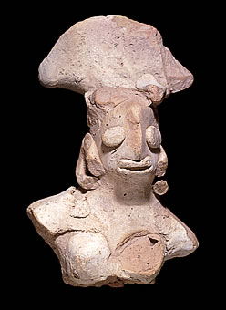

Human figurineThis is a human figurine from the Indus Valley city of Mohenjo-daro. It was probably made between 2200 B.C. and 1800 B.C. 
Excavations at Indus Valley cities have uncovered hundreds of animal and human figurines. Although we do not know how they were used or why they were made, we can learn many things about the Indus Valley Civilization from them. For example, the various types of animal figurines show us the types of animals which were common at the time. The human figurines show us different hairstyles and jewellery probably worn by people living in the Indus Valley thousands of years ago. |